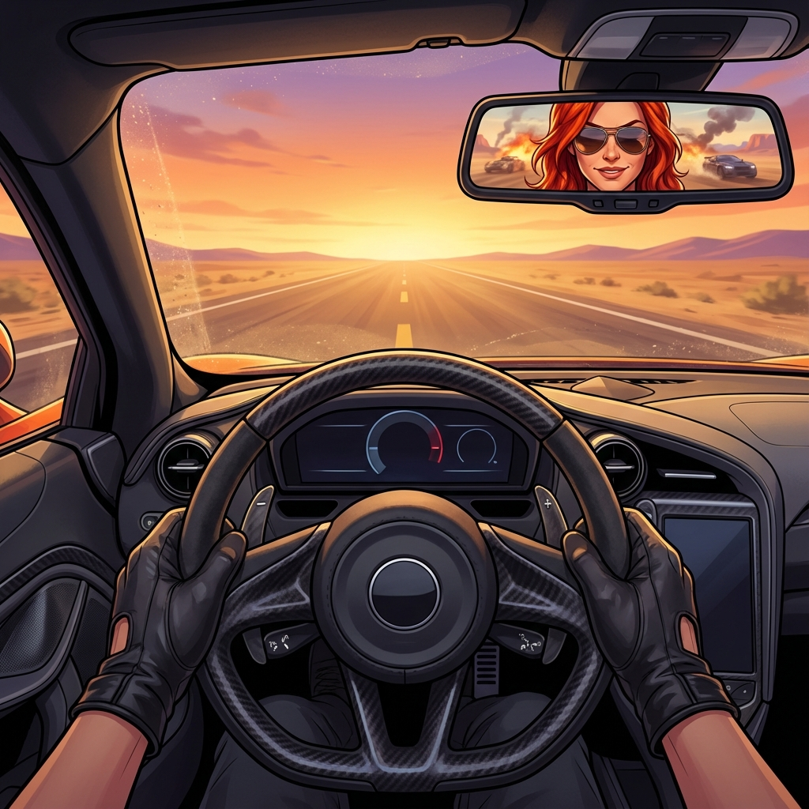

La beta sigue creciendo
La beta sigue creciendo y evolucionando con nuevas mecanicas, mejoras jugables y muchisimo contenido nuevo.
Esta actualizacion trae cambios importantes en combate, movilidad y exploracion, ademas de preparar el terreno para todo lo que viene en futuras expansiones del juego.
Summit Valley
Bienvenido a Summit Valley, el primer contacto de los rebeldes con el exterior.
Ubicado en una enorme zona suburbana abandonada, este nuevo mapa apuesta por escenarios mas abiertos, rutas alternativas y combates mucho mas intensos y dinamicos.
Novedades principales
- Objetos destruibles distribuidos por diferentes zonas del mapa.
- Portales de transporte para moverte rapidamente entre puntos estrategicos.
- Nuevos elementos ambientales que hacen las partidas mas inmersivas.
- Mejor ritmo de combate y distribucion de zonas de conflicto.
- Nuevos puntos elevados y rutas secundarias para jugadores mas agresivos o tacticos.
- Ajustes de iluminacion y efectos ambientales para reforzar la identidad visual del escenario.
Summit Valley marca el comienzo de una nueva etapa para el juego y sera el escenario principal de las proximas pruebas y eventos.
Summit Valley
Suburbios abandonados donde el caos nunca descansa.
Las calles bloqueadas a la ciudad convierten a Summit Valley en una zona impredecible, donde cada partida puede desarrollarse de forma completamente distinta.
El mapa fue disenado para ofrecer tanto enfrentamientos rapidos como persecuciones largas, permitiendo aprovechar atajos, coberturas y rutas de escape en todo momento.
Ademas, se anadieron nuevos detalles ambientales y estructuras interactivas para hacer el entorno mucho mas vivo y dinamico durante las partidas.
Pilotos mas agiles en combate
Realizamos multiples mejoras en la conduccion y respuesta de los vehiculos para lograr una experiencia mucho mas fluida, rapida y satisfactoria.
Cambios principales
- Mejor respuesta en curvas cerradas.
- Sensacion de aceleracion mas natural.
- Ajustes de estabilidad durante impactos y colisiones.
- Mayor control del vehiculo en situaciones de combate intenso.
- Transiciones mas suaves entre velocidad, frenado y derrapes.
El objetivo de estos cambios es que cada enfrentamiento se sienta mas dinamico, competitivo y divertido.
Mini Habilidades
Llegan las nuevas Mini Habilidades, un sistema pensado para agregar mas variedad estrategica a cada partida.
Ahora, antes de comenzar, cada jugador podra elegir entre dos habilidades especiales capaces de cambiar completamente el resultado de un combate dependiendo de la situacion.
Shock
Una descarga electrica de corto alcance que paraliza temporalmente a los enemigos cercanos, reduciendo su movilidad y dejandolos vulnerables durante unos segundos.
Ideal para:- Emboscadas.
- Cortar persecuciones.
- Iniciar ataques agresivos.
Shield
Genera un escudo temporal que bloquea parte del dano recibido por el vehiculo durante unos instantes.
Ideal para:- Escapar de situaciones peligrosas.
- Resistir ataques enemigos.
- Sobrevivir durante enfrentamientos intensos.
Este sistema seguira expandiendose en futuras actualizaciones con nuevas habilidades y mejoras adicionales.
Actualizacion de vehiculos
Tambien realizamos mejoras visuales y de optimizacion en distintos vehiculos, ademas de incorporar una nueva categoria al juego.
Cambios realizados
- Sprayer ahora cuenta con un modelo mas ligero y estilizado, mejorando tanto su apariencia como su rendimiento general.
- Breakway fue reemplazado por una version mas optimizada para mejorar estabilidad y desempeno durante las partidas.
- Se anadio Makoto, la primera motocicleta disponible en el juego.
Makoto
Makoto introduce un estilo de conduccion completamente diferente, enfocado en:
- Mayor velocidad.
- Movilidad mas agresiva.
- Maniobrabilidad superior.
- Mayor riesgo en enfrentamientos directos.
La llegada de motocicletas abre nuevas posibilidades para futuras mecanicas y estilos de juego.